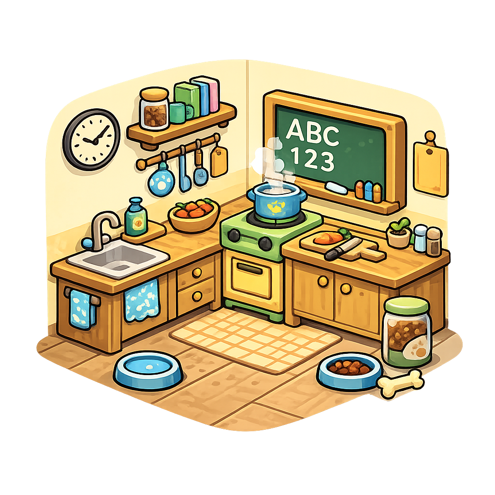
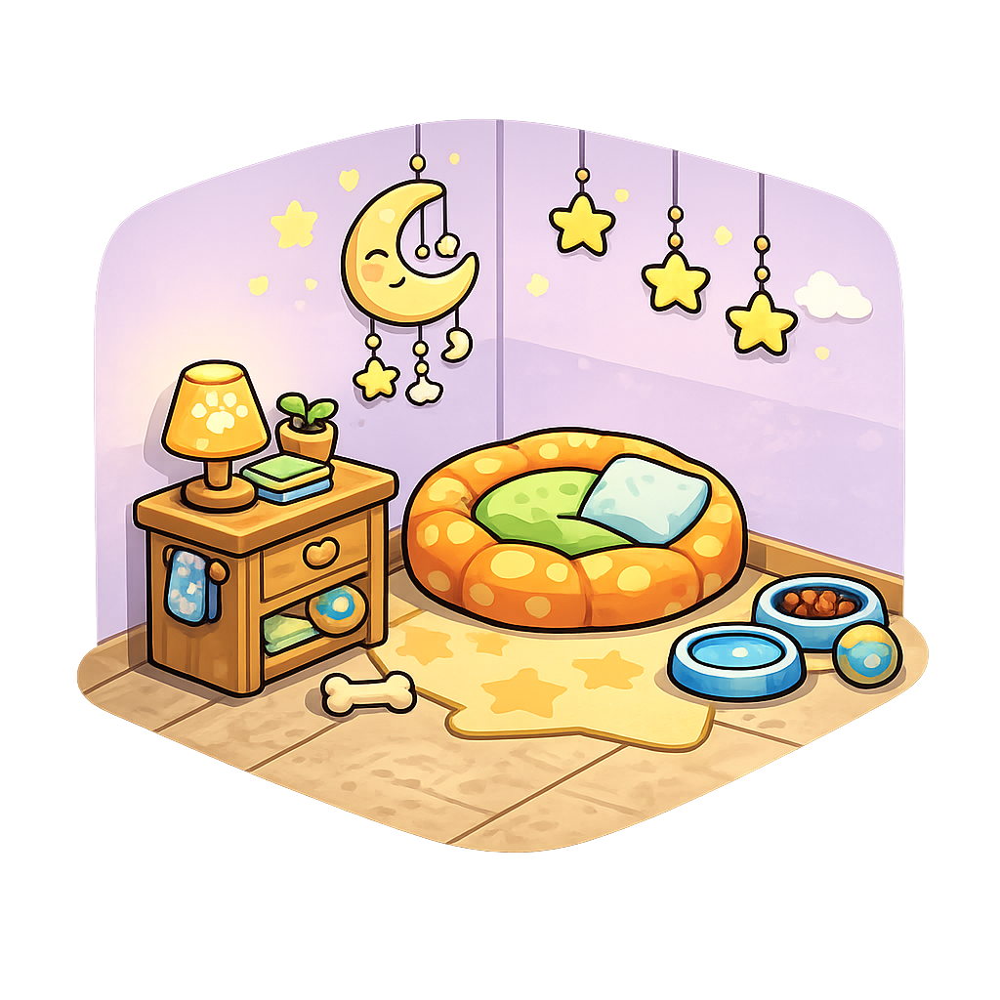
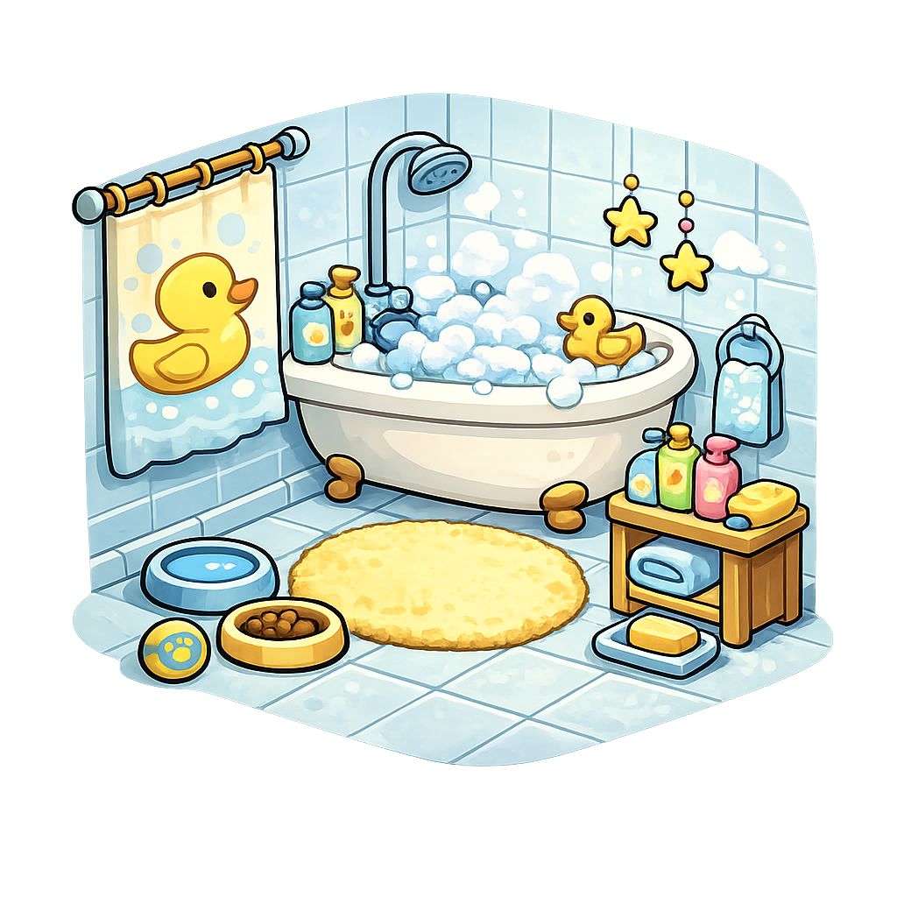
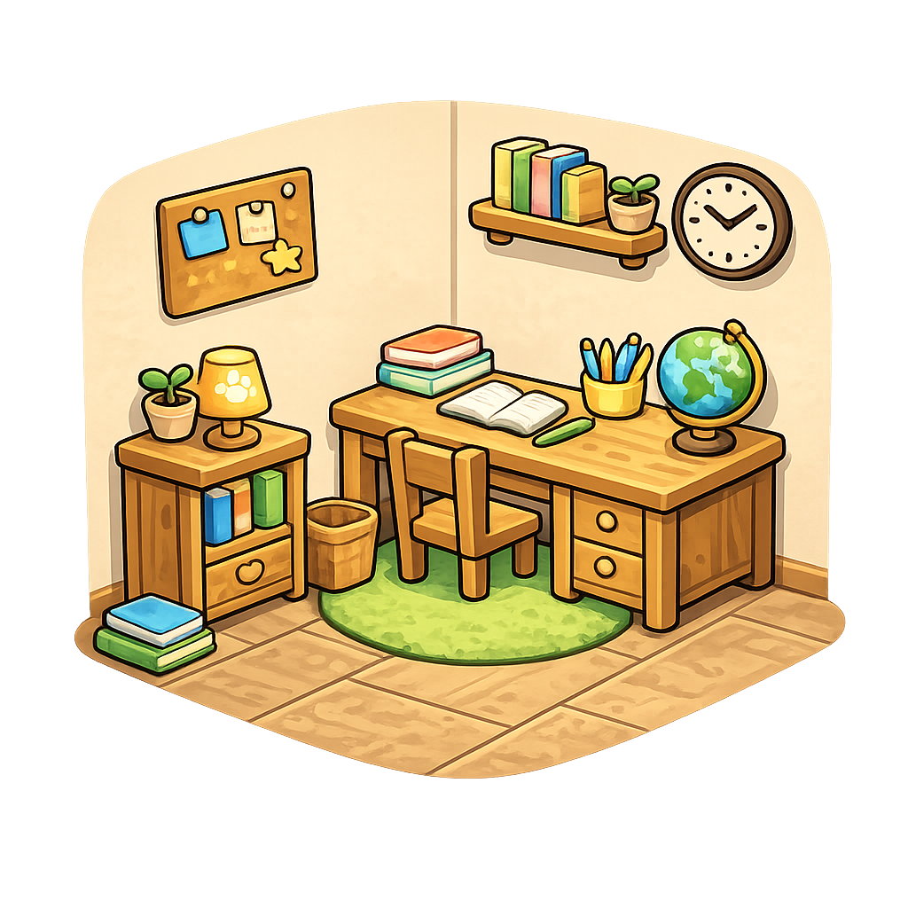
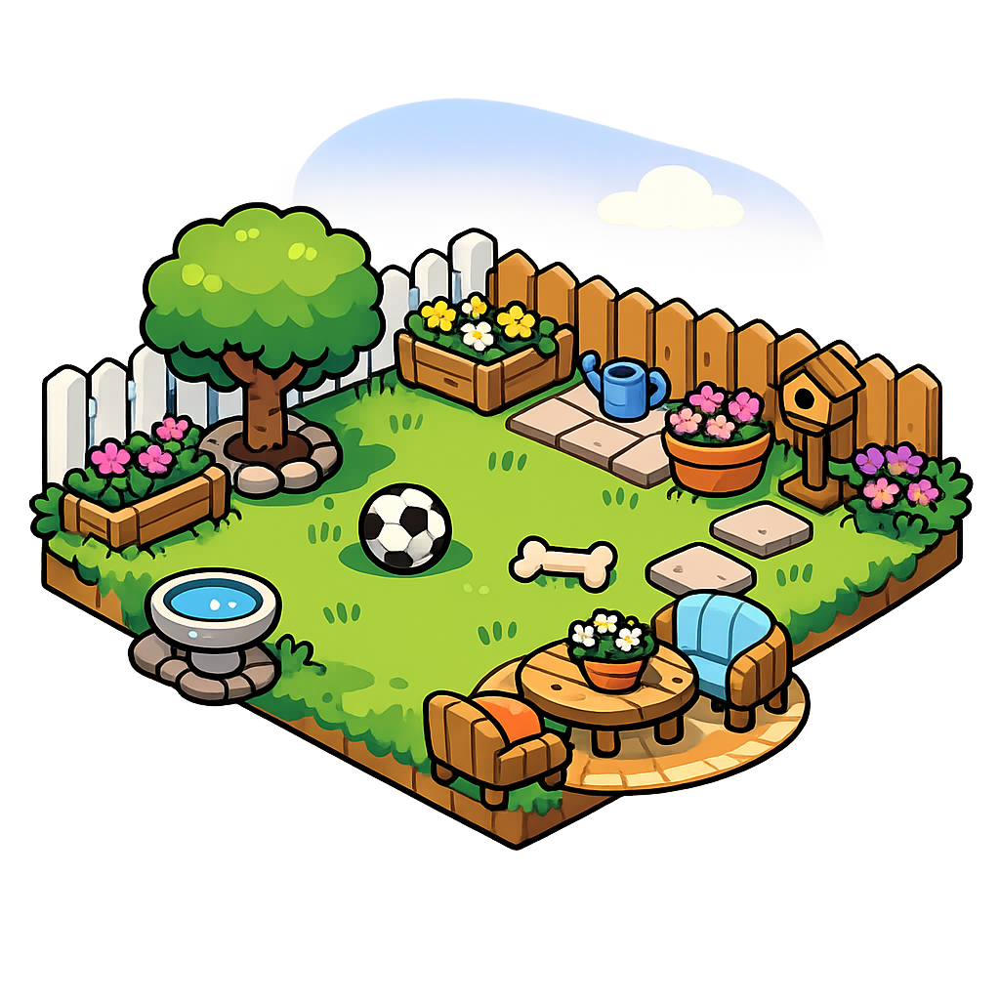
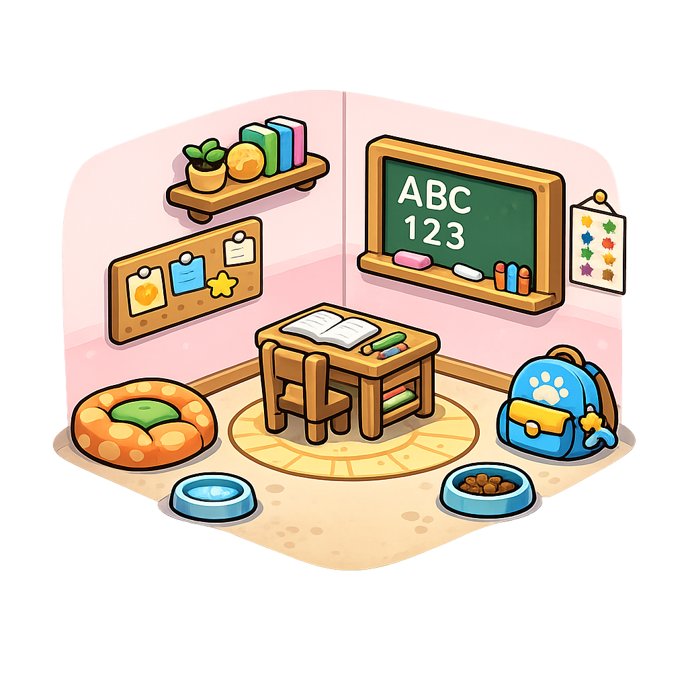

presenta
V A L E R I A V E N T U R A
toca para saltar
🐶
Toca para empezar
🍖
¡Muy bien!
🔊
¡Te ha llegado un cachorro!
Es un perrito fluffy muy pequeñito. Ponle un nombre para empezar a jugar juntos.
¡Empezar!
¡Hola,
Valeria
!
¿A qué quieres jugar?
📖
Jugar con letras
Leer y escribir con Fluffy
🔢
Jugar con números
Contar con Fluffy
🏆
Mis trofeos
Enséñaselos a mamá o papá
0
🏠
Volver a la casa
Cuidar a Fluffy
☁️
☁️
☁️
Fluffy
Cachorrito
🏆
0
Cocina

Cama

Baño

Estudio

Jardín

Escuela

🏠
Escuela de Fluffy
¿Qué clase quieres hoy?
✨ Refuerzo
📖
Letras
Leer y escribir
🔢
Números
Contar y operar
🎒 Cole
🇬🇧
Inglés
Heroes 3
➕
Mates
Cole de mates
🇪🇸
Castellano
Lengua
🟡🔴
Català
Llengua
🌍
Medi
Naturals i socials
🏠
Fluffy
Cachorrito
Experiencia
0
/
30
0
Cuidados
0
Sesiones
0
Trofeos
¡Has ganado un trofeo!
Enséñaselo a mamá o papá para conseguir
15 minutos de iPad
¡Genial!
🏠
🏆
Mis trofeos
0
trofeos sin canjear
Cada trofeo son
15 minutos
de iPad libre.
Enséñaselos a mamá o papá.
Canjear (solo adultos)
Tu amiguito
¡Hola,
Valeria
!
¡Jugar!
🏠
⭐
¡Muy bien!
¡Qué bien!
Jugar otra vez
Ir al menú